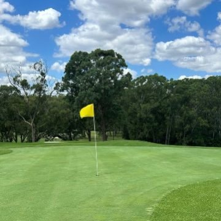

Soil surfactants on golf and bowling greens: where a granular residual product like CalWet fits

Few things frustrate a greenkeeper more than a patch of green that stays dry after the sprinklers have run. The grass thins, the surface firms up unevenly, and hand-watering only seems to help for a day or two. Very often the cause sits below the surface: parts of the root zone have become water repellent, so water no longer spreads through the soil evenly.
Soil surfactants are one of the main tools turf managers reach for. They are not all the same, though, and choosing between them is easier once you know what each type is built to do.
What a soil surfactant actually does
A surfactant lowers the surface tension of water, so it can wet surfaces it would otherwise bead up on. In turf, the aim is to help irrigation and rain move into a root zone that has started to resist it, and to spread more evenly once it gets there.
Within that broad job, products tend to fall into a few groups:
- Penetrants help water move down into the profile. In the HydroForce range, Evolve Soil Penetrant and Rapid sit here. Rapid is a highly concentrated penetrant that moves soil moisture further into the soil.
- Residual surfactants stay working in the soil for longer, which suits ongoing water repellency. HydroForce Recharge is a highly concentrated residual product aimed at water repellency and localised dry spot. Extend is a long-term option that promotes turf uniformity for up to 90 days.
- Irrigation-applied blends such as HydroForce Inject are designed around irrigation efficiency and can go out through the irrigation system or a conventional sprayer.
Why a granular option makes sense on greens
Most surfactants are liquids applied with a sprayer or through irrigation. A granular product goes out with a spreader instead. Some greenkeepers find that easier to fit around play and other spray work, and it gives another way to treat a green when spray equipment is busy elsewhere.
HydroForce CalWet Granular is a granular residual surfactant formulation developed specifically for fine turf situations such as greens and sportsfields. It combines the residual approach with granular application, which is why it often comes up in conversations about golf and bowling greens.
HydroForce Granular Greens takes a different route, pairing a high-performance surfactant with dispersible granule technology (DGT). Both are granular, but they are separate products, so it is worth comparing the labels before deciding.
Building surfactants into a greens program
- Find out where and when the dry spots appear. Note which greens, which parts of them, and at what time of year. Check moisture below the surface, not just on top.
- Match the product type to the problem. Use a penetrant when water needs to move down, a residual product for repellency that keeps coming back, and a granular option where spreading suits your program better than spraying.
- Follow the label. Rates, timing and watering-in instructions are on each product label. Read them before every application.
- Keep records. A simple note of what went out, when, and how the green responded makes the next season's decisions much easier.
- Get a diagnosis if the cause is unclear. Dry patches are not always water repellency. Indigo's TechForce diagnostic service evaluates agronomic problems with testing partners Westgate Labs, Ground Science, Plant Science Consulting and Tweed Laboratories.
Next steps
The full HydroForce soil surfactant portfolio, from DewPRO to Ultra, is listed on the Indigo Specialty Products website. If you would like to talk through which product suits your greens, contact the team in Rocklea on 0491 201 694 or at enquiries@indigospecialty.com.
General information only. This article does not replace the product label or advice for your specific site. Always read and follow the label before use.